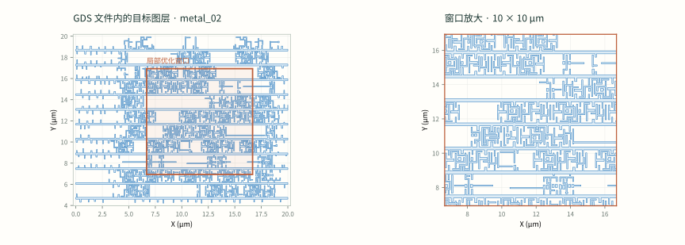

给定任务与环境，
在思考与行动中迭代。
↑ ↓
OBSERVE ← TOOL
当前这类工具型 Agent 通常按 ReAct 方式工作：先根据任务和环境思考，再行动、调用工具；根据行动的反馈继续思考和行动，直到完成任务或失败。
需要还原的，是模型实际面对的任务、环境和行动反馈。
类比 coding：workspace + 任务描述 + 可用工具，模型在其中持续执行，并由测试或验收判断结果。
质量、多样性、真实性。
多样性有较大的设计空间，但需要以真实工程为依据，避免造出形式丰富、实际用不上的任务。
质量：任务与反馈是否可靠
任务描述清楚，文件和依赖完整，动作与结果能对应，验收标准明确；成功、失败与未完成都有可信依据。
多样性：环境、任务、执行过程
环境多样性：不同 workspace 和工具条件；任务多样性：不同范围、目标和问题；执行多样性：不同拆解方式、操作顺序和解决路径。
真实性：与工程师的实际工作一致
输入来自真实工作场景，可用动作符合实际能力，反馈来自相应工具和流程，评价反映工程上是否真正解决了问题。
本次交流围绕三类多样性展开，用实际工程校准后续的数据构造。
现有任务，主要是单图层的局部优化。
任务包包含 GDS、SVRF 初始 recipe；配合固定工艺模型、工具和 EPE 等验收指标，限制 10 次候选评估，统计任务完成率。

全芯片 GDS → 选定图层 → 图层中的局部裁剪窗口。
当前看到的是最后一层级的优化任务，尚不足以代表真实工程中的全部任务类型。
真实项目的 workspace，
包含哪些内容？
我们目前的参照是“GDS + 初始 recipe + 目标 + 工具环境”。需要确认工业任务的实际组成和差异。
任务包是否也是这些文件？
除了版图和 recipe，还会有工艺模型、规则文件、运行脚本、已有热点、历史结果、参考设计和验收配置吗？目录之间怎样关联？
不同项目和阶段，初始环境怎样变化？
从零开发 recipe、沿用已有 recipe、适配新设计或修复问题时，工程师获得的初始材料和已知信息有哪些不同？
工具、模型与资料如何配套？
软件模块及版本、工艺模型、手册和内部经验资料如何指定？哪些是固定条件，哪些允许工程师开发或调整？
需要的实际参照：项目目录示例、文件用途和依赖、工具入口、固定条件与可修改范围。
全芯片、单图层、局部裁剪，
分别对应什么任务？
工程师实际接到的是哪一个层级？
是直接负责整个芯片、负责某个图层，还是接到局部热点？任务由谁拆分、分配，最后由谁负责整体结果？
局部优化在整体任务中处于什么位置？
是在代表性局部图形上开发 recipe，再应用到整层；还是分块独立修正，再做合并与全局验证？实际还存在什么方式？
任务目标除了局部 EPE，还有哪些？
recipe 开发、热点修复、设计适配、工艺窗口、掩模规则、运行效率等，分别怎样定义目标与完成标准？
需要的实际参照：任务类型、处理范围、分配方式，以及每类任务的优化目标。
拿到一个完整任务后，
实际怎样分步执行？
需要了解真实的操作顺序和判断依据，再决定模型可以探索哪些执行路径。
如何拆解、运行与汇总？
如果输入是全芯片 GDS，是逐层运行 OPC，还是再划分窗口或热点逐步处理？分块由工程师还是软件完成，如何处理边界、汇总结果和验证整层？
看到反馈后，怎样选择下一步？
查看哪些图形、轮廓、指标和日志？何时调参数、改规则、移动局部几何或调整 SRAF？何时回退、切换方案或进入全局回归？
手册和经验分别在什么时候起作用？
先查手册制定方案，还是先按经验执行、遇到问题再查？哪些步骤必须依赖文档，哪些主要靠历史案例、个人经验或团队讨论？
需要的实际参照：任务拆解、工具调用、操作顺序、资料使用，以及保留或回退的判断依据。
选一个实际任务，
从输入走到交付。
用同一个案例说明环境、任务和执行的关系，确认哪些环节已被当前 benchmark 覆盖，哪些尚未覆盖。
- 初始状态
- 原始任务是什么？workspace 有哪些文件？已有 recipe、模型和基线结果处于什么状态？
- 任务拆解
- 怎样从芯片或图层定位到实际处理对象？任务如何分配，局部结果怎样应用到整体？
- 迭代过程
- 先做什么、看到什么反馈、为什么改变方案？实际使用了哪些工具、手册与经验？
- 结束与交付
- 怎样确认达标或失败？经过哪些回归与测量，最后交付掩模、recipe、报告还是其他产物？
由实际执行过程，反推训练数据需要保留的信息。包括有效修改，也包括失败尝试、回退和任务未完成的情况。
以真实工作流为依据，
再扩展数据多样性。
先确定任务怎么发生、工程师怎么执行，再设计数据分布与采集方式。
| 构造维度 | 需要的实际材料 |
|---|---|
| 环境多样性 | 不同项目或阶段的初始 workspace、文件说明、依赖、软件与模型配置，以及配套资料。 |
| 任务多样性 | 不同处理层级、问题类型和优化目标的任务描述、输入、基线及验收标准。 |
| 执行多样性 | 任务拆解与操作记录、文件变化、工具调用、反馈结果、资料使用和最终交付物。 |
质量与真实性贯穿每一条数据。让任务可执行、过程可追溯、反馈可信、验收有依据；再验证构造出的任务是否仍符合工程师的实际工作。
先用少量实际案例验证数据构造方式，再扩大环境、任务和执行路径的覆盖。
记录仅保存在当前浏览器，可点击“导出记录”保存为文本。